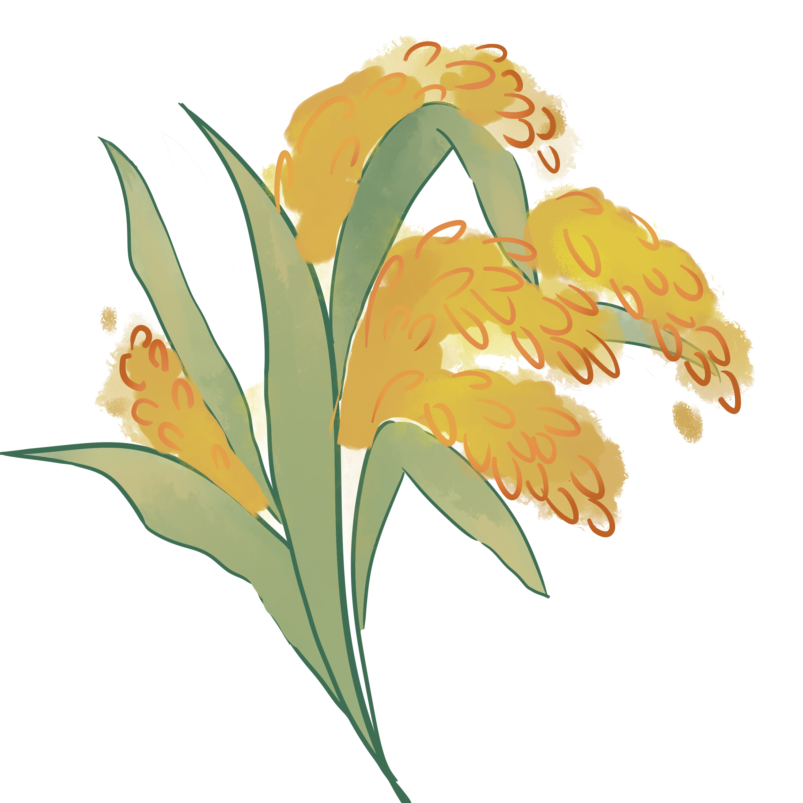

一稻济天下
一粒粮食可以救一个国家，也可以绊倒一个国家。
饭碗要牢牢掌握在我们中国人自己手上。
我们搞农业的，一定要为保障国家粮食安全，尽我们的努力。
禾下乘凉梦
我有两个梦想，一个禾下乘凉梦，
还有杂交稻覆盖全球梦。
一稻一人生
人就像一粒种子，各方面都要健康。
要做一粒好种子，身体、精神、情感都要健康。
种子健康了，我们每个人的事业才能根深叶茂，枝粗果硕。
江山思国士，人去稻田丰
20%
袁隆平,世界上第一个成功利用水稻杂种优势的科学家。杂交水稻使水稻的单产大幅度提高,多年来的生产实践表明，杂交水稻一般可比常规稻增产20%左右。
2.4亿亩
目前,我国杂交水稻年种植面积超过2.4亿亩,占水稻总种植面积的57%,产量约占水稻总产量的65%

8000万人口
据统计,杂交水稻每年增产的稻谷,可为中国多养活8000万人口。
3000斤
袁隆平领衔最新育成的第三代杂交晚稻参优一号,与第二代杂交早稻一起,2020年全年亩产达1530.76公斤,实现了周年亩产稻谷3000斤的攻关目标。
[1]澎湃新闻 《袁隆平和他的杂交水稻》 https://www.thepaper.cn/newsDetail_forward_12801493
[2]国家数据 主要农作物单位面积年产量 https://data.stats.gov.cn/easyquery.htm?cn=C01
[3]季昌仁.袁隆平：与大地贴得更近，看天空才会更远[J].商业文化,2021(19):15-18.
[4]刘朝晖.“无双国士”袁隆平的另一面[J].新民周刊,2021,(19):40-45.
联系邮箱：743606710@qq.com 丨 在线电话：15882638119 丨 工作室地址：四川省南充市顺庆区华凤街道西华师范大学